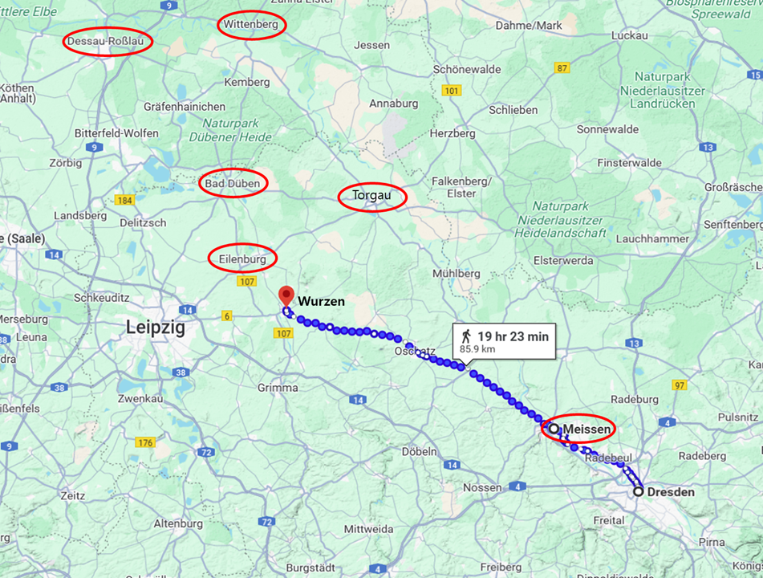
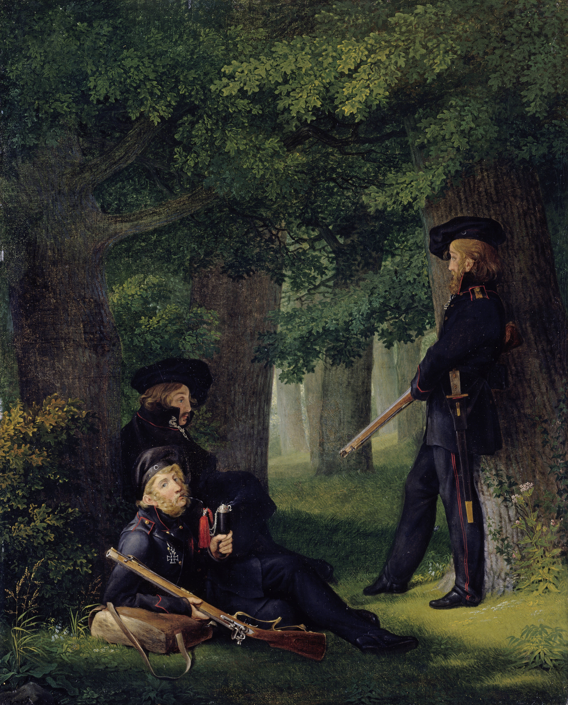
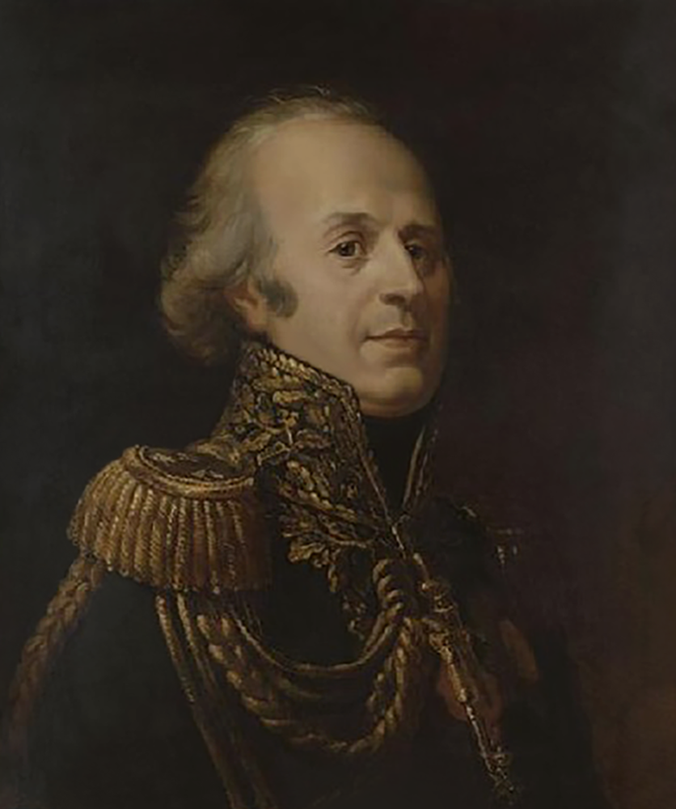

라이프치히로 가는 길 (21) - 전진과 철수
게시: 2025-03-24T08:10:34+09:00
나폴레옹에게는 블뤼허와 베르나도트를 이번 전투에서 확실히 괴멸시켜야 한다는 부담감이 있었습니다. 다만 그건 전투에서 이들을 패배시키지 못할 수도 있다는 두려움이 아니라, 이번에도 이들이 싸우지 않고 도망치면 어쩌나 하는 우려였습니다. 이를 위해서, 그는 당장 라이프치히로 무작정 달려가기 보다는, 먼저 북쪽으로 이동하면서 상황을 파악한 뒤 먼저 엘스터와 데사우의 다리들, 즉 블뤼허와 베르나도트의 탈출로부터 끊기로 합니다. 이건 너무 낙관적으로 승리를 자신하는 행위 아니었을까요? 나폴레옹은 블뤼허-베르나도트와의 결전에서 패배는 전혀 생각하고 있지 않았습니다.

(나폴레옹이 세운 1차적인 계획은 먼저 마이센으로 간 뒤, 거기서 정보를 더 획득하여 그에 따라 토르가우로 갈지 뷔르첸으로 갈지 정한다는 것이었습니다. 잠정적으로는 라이프치히 바로 동쪽인 뷔르첸으로 간다는 것이었는데, 나폴레옹은 드레스덴에서 뷔르첸까지 85km를 딱 2일만에 주파한다고 계획했습니다.) 일단, 그들과의 전투에서 승리 이외에 다른 가능성을 모두 없애기 위해 그는 가용한 모든 병력을 다 동원했습니다. 10월 7일 오후 나폴레옹이 드레스덴에서 마르몽에게 보낸 편지를 보면 그는 그날 밤 8만의 병력을 이끌고 마이센으로 향한다고 되어 있습니다. 이건 사실상 드레스덴은 텅 비운다는 뜻이었습니다. 실제로 나폴레옹은 드레스덴을 포기할 생각이었습니다. 작센의 수도이자 엘베강의 주요 도하점으로서 요새화된 거점이었던 드레스덴을 왜 스스로 포기하려 했을까요? 의외로 10월 7일 당시, 드레스덴은 전략적 가치가 거의 없는 상태였습니다. 일단 8월 27일 드레스덴 전투 때와는 달리, 연합군은 드레스덴이 아니라 라이프치히를 노리고 있었습니다. 게다가 원래 드레스덴을 노리고 동쪽에서 다가오던 슐레지엔 방면군은 더 이상 거기에 없었고, 이미 북쪽 바르텐부르크와 바트 뒤벤 일대에 포진하고 있었습니다. 그러니 드레스덴은 노리는 적도 없었고, 굳이 지킬 필요도 없었던 것입니다. 게다가, 드레스덴 전투 이전부터 드레스덴 수비를 맡고 있던 생시르는 나폴레옹에게 드레스덴을 포기하자고 건의했습니다. 이유는 식량 고갈이었습니다. 그 일대에서 10만이 넘는 병력이 장기 주둔하다 보니, 더 이상 빵과 밀가루를 구할 수가 없었던 것입니다. 약 한 달 전인 9월 중순 약 680톤의 밀가루를 토르가우에서 드레스덴으로 실어왔지만, 불과 3주 만에 그것도 거의 동이 나버린 뒤였습니다. 생각해보면 그럴 수 밖에 없었습니다. 680톤이라고 해봐야 당시 병사들의 정상적인 하루 배식량인 1파운드의 빵으로 계산하면 15만 명의 2주일 식량에 불과했습니다. 더 실어오려고 해도, 이미 엘베강 좌우 강변에는 연합군의 코삭 기병들과 독일인들로 구성된 자유군단(Freikorps), 즉 빨치산들의 활동이 활발하여, 선박을 이용한 대량 수송은 더 이상 쉽지 않았습니다.

(이 그림은 독일 자유군단의 유명한 대원 셋을 그린 것입니다. 비스듬히 누워있는 하트만(Heinrich Hartmann), 그 뒤에 앉아있는 쾨르너(Theodor Körner), 그리고 오른쪽에 서있는 프리젠(Friedrich Friesen)인데, 쾨르너의 경우 원래 시인이었고, 프리젠은 체조 전문가였습니다. 쾨르너는 1813년 8월 21세의 나이로, 그리고 프리젠은 1814년 3월 30세의 나이로 각각 전사했습니다. 저들의 제복은 검은 색을 기본으로 금색 견장과 붉은 색 장식으로 되어 있는데, 저 색상들에서 독일 국기가 만들어졌다는 설도 있습니다.) 무엇보다, 이제 곧 블뤼허-베르나도트와, 그리고 곧바로 이어서 슈바르체베르크와 결전을 벌어야 했습니다. 그 승패에 따라서 작센 뿐만 아니라 유럽 전체에 대한 주도권이 결정되는 것이지, 드레스덴 하나를 지키느냐 버리느냐는 중요하지 않았습니다. 그런 중요한 순간에 드레스덴을 지키기 위해 2~3만의 병력을 분산하는 것은 나폴레옹의 스타일이 아니었습니다. 그는 드레스덴에 2개 사단, 그리고 그 남동쪽의 인접 도시 피르나에 1개 사단을 경비 병력으로 배치하고, 그 이외의 모든 병력을 데리고 블뤼허-베르나도트와 싸우러 가기로 했습니다. 그래도 여태까지 수 개월을 머물며 작센 전선의 사령부로 삼았던 도시에서 철수하는 것은 나름 큰 일이었습니다. 식량은 거의 남아있지 않았으나 탄약은 여전히 많이 쌓여 있었고, 무엇보다 여기에는 약 1만의 환자들과 부상병들을 수용한 병원들이 있었습니다. 이들 중 6천은 70여척의 선박에 실어 약 3만발의 포병 탄약과 함께 엘베강 하류의 요새 토르가우로 후송하기로 했습니다. 사실 토르가우 요새 자체는 도시에 비하면 큰 공간이 아니었으므로 이는 토르가우에게 꽤 큰 부담이 되는 일이었습니다. 공간적으로도 그랬지만 무엇보다 식량이 부족했습니다. 당시 토르가우의 사령관은 나르본(Narbonne) 백작이었는데, 나폴레옹은 그에게 편지를 보내 '환자들이 추가 부담이 된다는 것을 알고 있다, 30~40만 프랑의 돈을 보내줄 테니 알아서 잘 꾸려보라, 비텐베르크에서도 밀가루를 좀 보내줄 것이고 라이프치히에서도 1만 CWT(hundredweight, 1 CWT는 약 100 파운드 = 45.4kg, 즉 454톤)의 밀가루를 보내줄 것이다'라고 통보했습니다. 아마 돈은 전혀 도움이 되지 않았을 것이고, 밀가루에 대한 약속은 지켜지지 않았을 것입니다.

(나르본 백작(Louis Marie Jacques Amalric, comte de Narbonne-Lara)입니다. 그는 어릴 때 베르사이유 왕궁에서 프랑스 공주들과 함께 자랐고 25세의 나이로 대령 계급을 받을 정도의 고위 귀족 출신이었습니다. 그러나 그는 원래 자유주의적 사상의 소유자였기 때문에 프랑스 혁명에 호의적이었고 탈레랑 및 푸셰와도 친구지간이었습니다. 그는 1813년 오스트리아 주재 대사였으나, 결국 오스트리아가 연합군에 넘어가는 것을 막지 못했습니다. 이후 토르가우 사령관을 맡았는데, 불과 몇 달 뒤 토르가우에서 티푸스에 걸려 사망합니다. 당시 관습에 따라, 그의 유해는 현지에 매장하고 심장만 프랑스로 가져왔다고 합니다.) 그리고 개인적인 마차 등의 운송 수단을 가진 장교 환자들은 알아서 저 멀리 서쪽 후방인 에르푸르트로 알아서 철수하도록 했습니다. 그러고도 약 5천~6천의 환자들이 남았는데, 이들은 너무 상태가 좋지 않아 마차든 선박이든 이동이 불가능한 상태였습니다. 이외에도 드레스덴 철수를 위해서는 할 일이 많았습니다. 드레스덴을 비워주면 곧 연합군이 점령할 것이므로 그들에게 넘겨주지 않기 위해서는 가져갈 수 없는 고정식 요새포들을 못쓰게 만들어야 했는데, 이를 위해서는 점화구에 무른 구리못을 박아넣고 망치질을 해야 했습니다. 그외에도 성벽 바깥에 만들어둔 강화진지(blockhouse)들도 폭파하거나 허물어서 연합군이 못 쓰도록 만들어야 했습니다. 요새포 못지 않게, 어쩌면 그보다 훨씬 더 중요한 것이 드레스덴의 작센 국왕 프리드리히 아우구스투스 1세였습니다. 당시엔 라인연방의 핵심인 바이에른이 나폴레옹을 배신하고 연합군 측으로 붙으려 한다는 소문이 여기저기서 돌고 있었습니다. 실제로 바로 다음 날인 10월 8일, 바이에른은 오스트리아와 리드(Ried) 조약을 맺고 정식으로 진영을 갈아 탔습니다. 그러나 나폴레옹은 그때까지도 믿고 싶은 것만 믿는 나쁜 버릇을 버리지 못하고 그런 소문을 철저히 무시하고 있었습니다. 심지어 뮈라에게 보내는 편지에서도 '바이에른이 배신했다는 소문은 무시하게. 그 뿐만 아니라 연합군측에게 도움이 되는 모든 소문은 무시하게'라며 부하들에게도 그런 대책없는 낙관주의를 퍼뜨리려 했습니다. 하긴 바이에른이 배신을 하려 한다고 해서 당장 할 수 있는 것이 없었으니, 부하들의 사기라도 챙기려 했을 수도 있습니다. 하지만 바이에른과는 달리 작센은 당장 관리를 해야 했습니다. 말단 병사들은 물론 장군들도 전쟁 초기와는 달리 작센 주민들의 민심이 크게 이탈한 상태라는 것을 느끼고 있었습니다. 원래 병수발 10년에 남아나는 효자 없다고, 반가운 손님도 1달 넘게 돌아가지 않고 머물면 짜증이 나기 마련인데 거칠고 배고픈 10만 대군이 몇 달째 퍼질러 앉아 식량을 갈취하고 있었으니, 굳이 연합군측의 민족주의적인 선동이 없었다고 하더라도 작센 주민들의 감정이 좋을 리가 없었습니다. 그런 상황에서 나폴레옹이 수도 드레스덴을 완전히 비운 채 요새포에 구리못을 박고 서쪽으로 향한다? 이건 작센에게 딴 생각을 품게 하기 딱 좋은 상황이었습니다. 무엇보다, 작센은 바이에른과는 달리 처음부터 프랑스와 이해를 함께 한 핵심 국가도 아니었습니다. 나폴레옹은 프리드리히 아우구스투스 1세에게 묻지도 않고 '작센 국왕이 나폴레옹 황제와 함께 계시길 원하신다'라는 변명과 함께 작센 국왕과 왕비를 자신의 군과 함께 이동하도록 강제했습니다. 보는 눈도 있고 해서 프랑스군이 아니라 작센군 및 폴란드군의 호위를 받도록 했지만, 이건 누가 봐도 노골적인 볼모였습니다. 나폴레옹은 당장 10월 7일 새벽 5시, 고참 근위대부터 행군을 시작하도록 하고 자신도 6시에 드레스덴을 떠나며 생시르로 하여금 드레스덴의 철수를 위한 조치들을 마치고 2일 후에 제14군단을 이끌고 오도록 지시했습니다. 그러나 드레스덴에서 마이센으로 가는 그 짧은 길에, 나폴레옹에게 도착한 보고서 하나가 나폴레옹의 계획에 변경을 일으킵니다. 꼭 그 때문만인지는 모르겠으나, 그 변경은 결국 라이프치히에서의 패배로 이어집니다. Source : The Life of Napoleon Bonaparte, by William Milligan Sloane Napoleon and the Struggle for Germany, by Leggiere, Michael V With Napoleon's Guns by Colonel Jean-Nicolas-Auguste Noël https://www.britannica.com/event/Napoleonic-Wars/Dispositions-for-the-autumn-campaign https://www.napoleon.org/en/history-of-the-two-empires/timelines/1813-and-the-lead-up-to-the-battle-of-leipzig/ http://www.historyofwar.org/articles/campaign_leipzig.html https://en.wikipedia.org/wiki/Friedrich_Friesen https://en.wikipedia.org/wiki/Louis,_comte_de_Narbonne-Lara